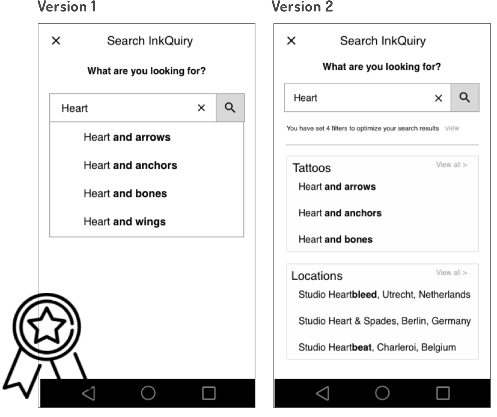

InkQuiry : Project Overview

Create a web app that allows both tattoo enthusiasts and those new to the tattoo scene to seamlessly explore inspirations according to preferences, such as artists and styles. InkQuiry is my solution for supporting users through the emotional journey of selecting a tattoo design. As the sole UX designer for the project, I was tasked with creating a solution that adheres to the entire Design Thinking Process. This involved carrying out the initial research, interviewing potential users, creating multiple iterations of InkQuiry and conducting usability tests before drafting final mockups. The entire project lasted from January 2018 - August 2018.
My Process
Business Analysis
A thorough competitor analysis was carried out on two of InkQuiry’s key competitors–Tattoodo and InkHunter. A SWOT analysis helped me gain insights on the status quo of the market and allowed me to recognize innovation gaps or areas that are lacking regarding the users’ needs.
User Research
After carving out a problem statement, I took the first steps to develop a solution and carried out three live user interviews with the aim of uncovering my users’ motivations, main pain points, and the mental models they have around the topic of tattoo apps. I then processed these interviews and began grouping the information I gathered. Through affinity mapping I was able to identify important relationships between these clusters of information.
Tattoo seekers need to feel comfortable with the artist they’re going to work with, so the app should include a function for reviewing artists that also features testimonials.
Instagram and Pinterest were both cited as outlets with which people often like to search for tattoos, so inkQuiry will need a well-designed function that allows users to seamlessly scroll through images of tattoos.
Users don’t want to waste their time, so inkQuiry will need a “favorites” section that users can easily revisit upon logging in again.
User Personas
Based on the interviews with my users and the insights gained from the affinity maps, three user personas were created. Creating these helped me to further establish empathy with my users and prioritize InkQuiry’s functionality based on its target audience.
User Journey Map
In order to get a better grasp on the processes through which a user goes through to accomplish a task, a user journey map was created. These outline how the user is feeling as well as what they are doing and thinking as they navigate their way through a product’s functionality. Creating this overview helped me better understand InkQuiry’s design requirements.
Information Architecture & Sitemap

In order to streamline the hierarchy and structure of InkQuiry’s sitemap, a closed card sorting session was carried out. Users were given the task of organizing topics and features relevant to the web app into pre-defined categories.
Low and Mid-Fidelity Wireframing
With my personas, user journey maps, and revised site map in mind, I began drafting low-fidelity wireframes in order to establish a basis off of which I could then iterate.
I then proceeded to investigate various best practices and usability heuristics–always with my user in mind–and developed a more refined, complete user flow of mid-fidelity wireframes.
Usability Testing
With the three core features of InkQuiry rendered in mid-fidelity wireframes, I conducted 6 live usabilitytests. Using the Invision prototyping tool, I questioned users as they navigated their way through the various functions of the web app and recorded their answers. This information was the synthesized and illustrated through an affinity map.
In addition to other topics concerning the placement and hierarchy of content, InkQuiry’s search feature yielded the most criticism. Users had the following issues:
Due to data protection concerns, the users were reluctant to allow InkQuiry access to their location. The purpose of this request was to automatically populate search results with local artist.
Users wanted to be able to adjust their filter settings before executing a search.
Preference Testing
To address these comments, I tested the existing search option against a new search screen (version two), which automatically populates fields according to tattoos designs and artist locations and so allows users to get location-specific results without revealing their own whereabouts. Ultimately, the users preferred the original version and a new iteration that satisfies their preferences was included in the final mockup.
Further Challenges and Solutions
To further refine my design, I collaborated with 3 UX designers. Upon receiving feedback, I weighed their suggestions according to actionability and implemented these into InkQuiry’s final mockup designs.
Onboarding
During the original onboarding process, users first created their account and were then prompted to select some preferences to individualize their experience. Upon carrying out his initial search, one user didn’t understand why his search filters were activated, as the connection between the onboarding process and this feature was not made. This issue was addressed by adding a more visual aspect to the onboarding process and making “create account” be the final step of the process.
Liking Images
InkQuiry allows users to like images they see as they navigate through the app by clicking a heart icon. On an earlier iteration of the design, the heart icon was simply placed over the tattoo image, which made it more difficult to view when placed upon darker tattoos. To correct for this, a teal field was added under the icon.
Entry Screen
InkQuiry’s original entry screen had some accessibility issues, as the various colors did not adhere to the WCAG 2.0 contrast ratio of 4.5:1. What’s more, there was no difference between the two buttons on the page. To correct this, the scrim was lightened and the color of the“sign-up” button was changed to create a hierarchy.
Design Language System
Finished Mockups
Conclusion
Creating InkQuiry was an exciting challenge that regulary pushed me out of my comfort zone. While some aspects of the design process, such as interviewing users, came naturally to me, other areas required developing complete new skill sets. Learning how to grasp the basic principles of information architecture or understanding best practices with regards to page layout are two topics that come to mind. Fortunately, the abundance of free online resources and input from the UX community made finding answers to these questions not only manageable, but fun!
Back to Home